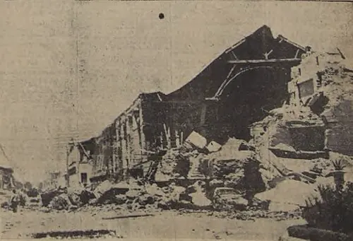

Terremoto de Chillán y la CORFO

El 24 de enero de 1939, poco antes de la medianoche, un terremoto destruyó gran parte de Chillán y causó graves daños en Concepción y otras ciudades de la zona. Es considerado el sismo más mortífero de la historia de Chile; las cifras de víctimas varían según las fuentes, pero se cuentan por miles. El desastre ocurrió un mes después de que Pedro Aguirre Cerda asumiera la presidencia con el apoyo del Frente Popular. Su gobierno propuso una ley que, tras un intenso debate en el Congreso, se aprobó en abril de 1939 y creó dos organismos: la Corporación de Reconstrucción y Auxilio y la Corporación de Fomento de la Producción (CORFO). La oposición objetó el aumento de impuestos y del papel del Estado en la economía. La CORFO se convirtió en el motor de la industrialización por sustitución de importaciones: planificó el desarrollo y dio origen a empresas como ENDESA, la Compañía de Acero del Pacífico (CAP) y ENAP. Muchos historiadores la consideran el inicio de un Estado desarrollista que orientó la economía chilena durante décadas. La reconstrucción, con criterios antisísmicos, cambió además el rostro de Chillán.
Versión para niños
La noche del 24 de enero de 1939, un fuerte terremoto sacudió la ciudad de Chillán y otras zonas del centro sur de Chile. Muchas casas de adobe se derrumbaron y miles de personas perdieron la vida. El presidente Pedro Aguirre Cerda pensó que el país no solo debía reconstruirse, sino también crecer. Para eso se creó la CORFO, una institución que ayudó a construir fábricas, centrales eléctricas y otras obras importantes para Chile.
Para maestros
Nivel sugerido: 2° medio
Objetivo: Analizar cómo una catástrofe natural impulsó un cambio en el rol del Estado en la economía chilena.
Preguntas para la clase:
- ¿Por qué el gobierno aprovechó la reconstrucción para impulsar la industrialización?
- ¿Qué ventajas y riesgos tiene que el Estado dirija el desarrollo económico?
- ¿Qué empresas creadas por impulso de la CORFO siguen existiendo hoy?
Actividad (20–30 min): Los estudiantes elaboran una línea de tiempo con las principales empresas creadas por la CORFO entre 1939 y 1960 y discuten en parejas qué necesidad del país buscaba resolver cada una.
Fuentes sugeridas: Memoria Chilena; Biblioteca del Congreso Nacional (BCN); Museo Histórico Nacional.
Objetivos de Aprendizaje (Currículum Nacional)
- 5° básico · HI05 OA 12 … riesgos naturales que afectan a su localidad, como sismos, maremotos, inundaciones, derrumbes y volcanismo, e identificar formas en que la comunidad puede protegerse
- 6° básico · HI06 OA 14 Explicar cómo han influido los desastres naturales en el desarrollo de Chile durante su historia reciente, dando ejemplos de nivel nacional y regional
- 2° medio · HI2M OA 06 Analizar las principales transformaciones … que siguieron a la Gran Depresión en Chile … promotor de la industrialización (ISI, CORFO)
Personajes
Revisión humana pendiente. Cómo se revisa · Reportar un error
Cómo citar: Historia de Chile. (2026). Terremoto de Chillán y la CORFO. En Historia de Chile: atlas y línea de tiempo. https://moises-salgado.github.io/historia-de-chile/momento/terremoto-de-chillan-y-la-corfo.html